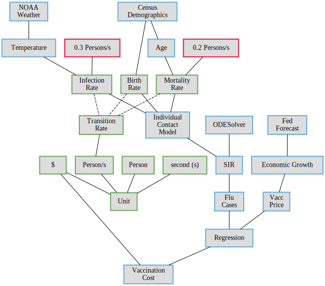
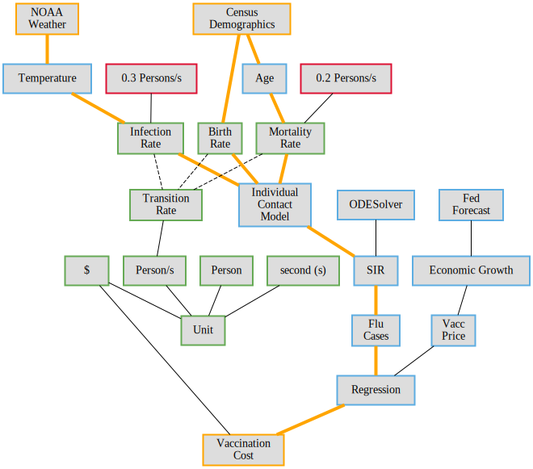

Slides
Extracting Model Structure for Improved Semantic Modeling
- James Fairbanks, GTRI
- computational representations of model semantics with knowledge graphs for
metamodel reasoning.
Goals
- Extract a knowledge graph from Scientific Artifacts (code, papers, datasets)
- Represent scientific models in a high level way, (code as data)
- Build metamodels by combining models in hierarchical expressions using reasoning over KG (1).
Running Example: Influenza
Modeling the cost of treating a flu season taking into account weather effects.
- Seasonal temperature is a dynamical system
- Flu infectiousness is a function of temperature
Running Example: Modeling types
Modeling the cost of treating a flu season taking into account weather effects.
- Seasonal temperature is approximated by 2nd order linear ODE
- Flu cases is an SIR model 1st oder nonlinear ode
- Mitigation cost is Linear Regression on vaccines and cases
Scientific Domain
We focus on Susceptible Infected Recovered model of epidemiology.
- Precise, concise mathematical formulation
- Diverse class of models, ODE vs Agent based, determinstic vs stochastic
- FOSS implementations are available in all three Scientific programming languages
Graph of SIR Model

Knowledge Extraction Architecture

Example Input Packages
- EMOD, Epimodels, NetLogo, and FRED are established packages, given their maturity and availability of published papers citing these packages.
- Pathogen and NDLib are newer packages, we expect easier to work with and more future adoption.
- Textbooks [@voitfirst2012] and lecture notes[1] will be a resource for these simple models that are well characterized.
Model Representation and Execution
Representation of models occurs at four levels:
Executable: the level of machine or byte-code instructions
Lexical: the tradition code representation assignment, functions, and loops
Semantic: a declarative language or computation graph representation with nodes linked to the knowledge graph
Human: a description in natural language as in a research paper or textbook
Knowledge Graph

Hypothetical Knowledge Graph Sample
Knowledge Graph Schema
A preliminary design for types of knowledge in our knowledge graph. 
- Artifacts
- Components
- Models
- Variables
- Equations
- Concepts
- Values
Flu Metamodel Pipeline
Here is the DAG for our running example. 
See FluModel for worked out example.
Knowledge Graph Reasoning
- Define Model representations / KG schema
- Extract KG from artifacts
- Reason over KG to build metamodel
- CodeGen/Execution of Metamodel
How do we get from Weather to Cost?
 { width=80% }
{ width=80% }
 { width=80% }
{ width=80% }
Shortest path!
How do we get from Weather+Demographics to Cost?
{ width=80% }
Minimum ST flow!
Knowledge Graph Reasoning Open Questions
- What rules for path/flow computations are necessary and sufficient for a metamodel?
- Can we implement those rules by choosing weights?
- How do we handle uncertainty and near matches?
- How do we determine "necessary dependencies" better than "connected component"
- What about supplying expert information?
Infectious Disease Metamodel
- A more ambitious example of a metamodel
- Requires Agent based simulations of information diffuision and disease spread

Static vs Dynamic Graph
- Inherent tradeoff between flexibility and static analysis
- We will build the computation graph through the execution of code
- Metaprogramming will be used to generate the executable codes
Validation
- Extraction of KG elements from artifacts
- Metamodel construction
- Metamodel quality
Error and Residual
- Analogize the metamodel construction error and the model quality to the error and residual in numerical solvers.
Given $f(x)=0$ solve for $x$
- Measure both the error and the residual.
- Error $\mid x-x^\star\mid$, the difference from the correct solution
- Residual $\mid f(x) - f(x^\star)\mid$ or the difference from quality of optimal solution
Next Steps
- Incorporation of feedback today
- the types of artifacts in scope
- domain coverage and desired extensibility
- inclusion/exclusion of particular package(s) and/or knowledge artifact(s)
- Construction of a proof-of-concept version of our knowledge graph and end-to-end pipeline
- Tailor running example to DARPA objectives
- A automatic transformation of models at the Semantic Level